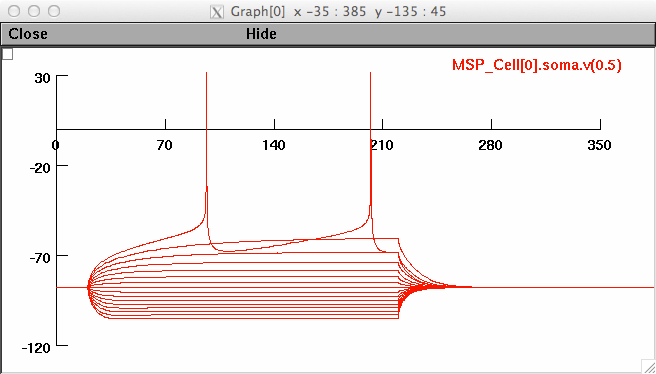

Nakano T, Yoshimoto J, and Doya K (2013)
A model-based prediction of the calcium responses in the striatal
synaptic spines depending on the timing of cortical and dopaminergic
inputs and post-synaptic spikes.,
Frontiers in Computational Neuroscience, 7:119
The dopamine-dependent plasticity of the cortico-striatal synapses is
considered as the cellular mechanism crucial for reinforcement
learning. The dopaminergic inputs and the calcium responses affect
the synaptic plasticity by way of the signaling cascades within the
synaptic spines. The calcium concentration within synaptic spines,
however, is dependent on multiple factors including the calcium
influx through ionotropic glutamate receptors, the intracellular
calcium release by activation of metabotropic glutamate receptors,
and the opening of calcium channels by EPSPs and back propagating
action potentials. Furthermore, dopamine is known to modulate the
efficacies of NMDA receptors, some of the calcium channels, and
sodium and potassium channels that affect the back propagation of
action potentials. Here we construct an electric compartment model of
the striatal medial spiny neuron with a realistic morphology and
predict the calcium responses in the synaptic spines with variable
timings of the glutamatergic and dopaminergic inputs and the
postsynaptic action potentials. The model was validated by
reproducing the responses to current inputs and could predict the
electric and calcium responses to glutamatergic inputs and
back-propagating action potential in the proximal and distal synaptic
spines during up and down states. We investigated the calcium
responses by systematically varying the timings of the glutamatergic
and dopaminergic inputs relative to the action potential and found
that the calcium response and the subsequent synaptic potentiation is
maximal when the dopamine input precedes glutamate input and action
potential. The prediction is not consistent with the hypothesis that
the dopamine input provides the reward prediction error for
reinforcement learning. The finding suggests that there is an unknown
learning mechanisms at the network level or an unknown cellular
mechanism for calcium dynamics and signaling cascades.
The model is based on the Wolf's model which is available from ModelDB
(http://senselab.med.yale.edu/ModelDB/ShowModel.asp?model=112834). Please
check their model for the basic instructions.
In this text, we describe the main differences from Wolf's model and
how to reproduce the figures in the paper.
1) The main modification of our model from Wolf's model.
baseline_values.txt : parameters of the model
damsg.mod : dopamine modulation
mod files like "caL13.mod" : channel modules modulated by dopamine
set_synapse*.hoc files : define connection between dopamine synapses
and channels
msp_template.hoc : morphology
MGLU.mod : metabotropic glutamate receptor module
ER.mod : intracellular calcium store module
stim_files2 folder : input files of dopamine and glutamate with timing
2) How to reproduce the figures in the paper.
First of all, to run the model on NEURON, just run mosinit.hoc on terminal.
> nrngui mosinit.hoc
To run simulations under conditions like up-state, in presence of
channel blockers, and so on used in the paper, please edit
"_control.hoc" and/or "_run_me.hoc" and run
>xopen("./_control.hoc")
>run()
Figure 4
>xopen("_IVsaveplot.hoc")
The subplot created for figure 4a should look like:

Figure 6
>xopen("_plot_post02.hoc")
figure 7
>xopen("_plot_pre_spine.hoc")
To reproduce some conditions in Figure 5, 6 and 7, run
>xopen("./_paper_condition.hoc")
figure 8 and 9
>xopen("_timed_input_Glu.hoc")
Figure 10, 11 and 12
>xopen("_timed_input_1AP_spine_post.hoc")
About the file names generated by the simulation:
After running a hoc file like "_plot_pre_spine.hoc", many data files
are created in a data folder, for example "data_pre_spine0_mgfree.txt"
and "data_c_pre_spine1_caTblock.txt" These file names contain the
following:
"c" indicates up-state, otherwise down-state.
"pre" indicates presynaptic (glutamate) input.
"spine0" and "spine1" indicate proximal and distal spines respectively.
"mgfree" and "caTblock" are conditions.
That is, "data_pre_spine0_mgfree.txt" means responses evoked
presynaptic input at a proximal spine at down-state under Mg-free
condition, and "data_c_pre_spine1_caTblock.txt" means responses evoked
presynaptic input at distal spine at up-state under the blocking
T-type calcium channels.
Similarly, in the case of "spine0_pren005_DAp040.txt",
"n" and "p" before the numbers are negative and positive timing of
inputs. The numbers are the time difference (ms) from a postsynaptic
spike. That is, "spine0_pren005_DAp040.txt" means responses to 5 ms
following glutamate input and 40 ms preceding doapmine input to
postsynaptic spike at a proximal spine.
This text is written by Takashi Nakano
Nov 6th, 2013
Updated Nov 22nd, 2013